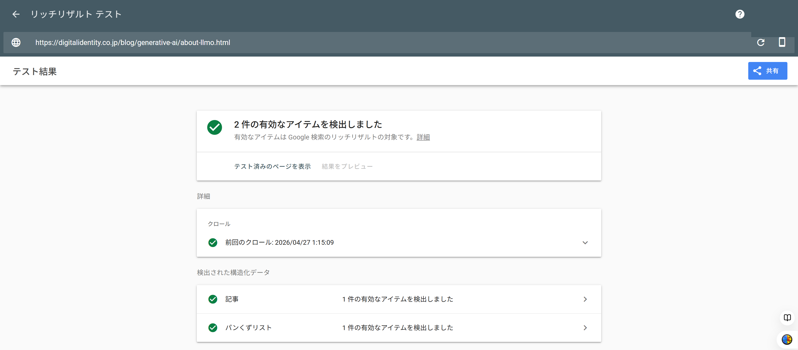
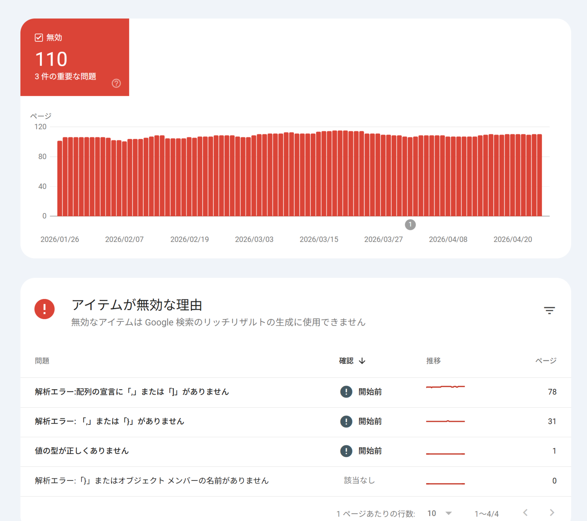

構造化データ
基本：構造化タグと構造化マークアップの違い、実践：JSON-LDによるOrganization・WebSite・Breadcrumb・Product・Article等の実装、検証ツール
実践：記事情報とE-E-A-T、検証ツールの活用
記事情報（Article）
記事のタイトル・画像・公開日・著者情報を構造化マークアップすると、検索結果に署名日が表示されたり、Googleニュースなど他サービスで活用されたりする場合があります。「Article」には、NewsArticle（ニュース記事）・BlogPosting（ブログ記事）・TechArticle（技術記事）などのサブタイプがあります。
| コード例：Article（JSON-LD） |
|---|
<script type="application/ld+json">
{
"@context": "https://schema.org",
"@type": "Article",
"headline": "記事のタイトル",
"image": "https://example.com/img.png",
"author": { "@type": "Person", "name": "著者名" },
"datePublished": "2026-01-01T00:00:00+09:00",
"dateModified": "2026-02-01T00:00:00+09:00",
"description": "記事の詳細な概要"
}
</script> |
主なプロパティは、headline（タイトル）、image（記事を表す画像）、datePublished／dateModified（公開日・更新日。ISO 8601形式で時刻まで含めることが推奨される）、author（作成者。PersonまたはOrganizationタイプを呼び出す）です。第7章で学んだE-E-A-Tの観点からも、著者情報や公開日を明示することは重要とされています。検索エンジンがコンテンツの専門性を認識しやすくなるとともに、ユーザーも情報の鮮度を判断しやすくなるためです。
FAQ（FAQPage）
よくある質問とその回答をFAQPageタイプで構造化マークアップすると、検索結果に質問と回答が折りたたみ表示されることがあります。mainEntityの中にQuestionを並べ、それぞれのacceptedAnswerとしてAnswerを記述します。
マークアップの検証・確認方法
構造化マークアップは、正しく記述しないと検索結果に反映されません。Googleやschema.orgは、確認のための無料ツールをいくつか提供しています。
| ツール | 確認できる内容 |
|---|---|
| スキーマ マークアップ検証ツール | schema.orgの構文として正しく記述できているかを検証する（Google固有の検証は行われない） |
| リッチリザルト テスト | Googleの検索結果でリッチリザルトとして表示される対象になるか、プレビューも含めて確認する |
| Search Consoleの拡張レポート | 公開後のサイトで、構造化データにエラーが発生していないかを継続的に監視する |


構造化データマークアップのエラー自体が、サイトの評価を直接下落させることはないとされています。ただし、検索エンジンに正しい情報を伝えるという本来の役割を果たせなくなるため、サイト更新時にはSearch Consoleで定期的にチェックすることが推奨されます。
実際にユーザーが閲覧する内容と構造化データの内容が大きく乖離していたり、存在しないクチコミを記載する、料理以外の手順を「レシピ」として記載するなど、ユーザーを欺くようなマークアップはスパムと判定される可能性があります。スパムと判定された場合はSearch Consoleの「手動による対策」にアラートが表示され、リッチリザルトの表示対象から外れることがあります（ただし、通常の検索順位への影響はないとされています）。
Google公式ドキュメントでは、構造化データを実装した企業の効果事例が具体的な数値とともに紹介されています。
| 企業 | 報告されている効果 |
|---|---|
| Rotten Tomatoes | 10万ページに構造化データを追加し、クリック率が25%増加 |
| The Food Network | 全ページの80%で検索結果の機能を有効化し、アクセス数が35%増加 |
| Nestlé | リッチリザルトを表示するページのクリック率が、表示しないページより82%高い |